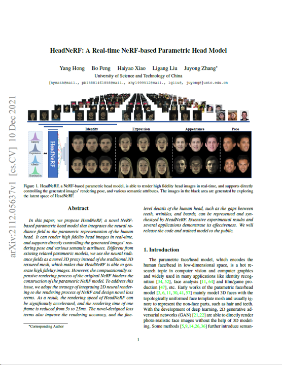

SelfRecon: Self Reconstruction Your Digital Avatar from Monocular Video
Boyi Jiang1,2 Yang Hong1 Hujun Bao3 Juyong Zhang1*
1University of Science and Technology of China 2Image Derivative Inc 3Zhejiang University-

Paper
-

Code
We propose SelfRecon, a clothed human body reconstruction method that combines implicit and explicit representations to recover space-time coherent geometries from a monocular self-rotating human video. Explicit methods require a predefined template mesh for a given sequence, while the template is hard to acquire for a specific subject. Meanwhile, the fixed topology limits the reconstruction accuracy and clothing types. Implicit methods support arbitrary topology and have high quality due to continuous geometric representation. However, it is difficult to integrate multi-frame information to produce a consistent registration sequence for downstream applications. We propose to combine the advantages of both representations. We utilize differential mask loss of the explicit mesh to obtain the coherent overall shape, while the details on the implicit surface are refined with the differentiable neural rendering. Meanwhile, the explicit mesh is updated periodically to adjust its topology changes, and a consistency loss is designed to match both representations closely. Compared with existing methods, SelfRecon can produce high-fidelity surfaces for arbitrary clothed humans with self-supervised optimization. Extensive experimental results demonstrate its effectiveness on real captured monocular videos.